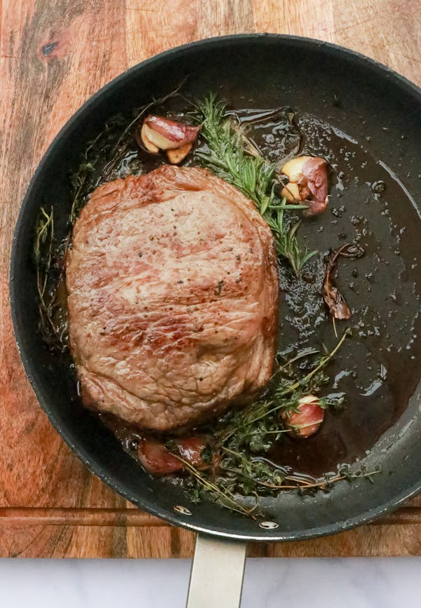

Seared Chuck Eye Steak
How to Make a Seared Chuck Eye Steak

Description
For a perfectly seared chuck eye steak, it is all about the balance of high heat and careful timing.
Start by letting the steak come to room temperature, then generously season it with salt and pepper.
In a hot skillet with a bit of oil, sear the steaks until a rich, golden-brown crust forms, flipping them only once.
After flipping, add butter, garlic, and herbs to infuse the meat with even more flavor.
Basting the steaks with the butter as they cook helps keep them juicy and tender, creating a mouthwatering finish.
Once the steaks are done, remove them from the skillet and let them rest to allow the juices to redistribute, ensuring each bite is as flavorful as possible.
The chuck eye, often referred to as a "poor man’s ribeye," delivers rich, beefy flavor with a perfect combination of tenderness and slight chew.
Paired with the aromatic garlic and thyme butter, it’s a simple yet indulgent meal.
Ingredients for Seared Chuck Eye Steak
- 2 boneless chuck eye steaks (about 1 inch thick)
- 2 tbsp olive oil (or vegetable oil)
- 2 tbsp unsalted butter
- 3 cloves garlic, smashed
- 2 sprigs fresh thyme (or rosemary)
- Salt and freshly ground black pepper to taste
Steps to Make Seared Chuck Eye Steak
- Prep the Steak
- Remove the 2 chuck eye steaks from the refrigerator about 30 minutes before cooking to bring them to room temperature.
- Pat the steaks dry with paper towels to remove excess moisture, which helps with the searing process.
- Season both sides of each steak generously with salt and freshly ground black pepper.
- Sear the Steak
- Heat 2 tbsp olive oil in a large, heavy skillet (preferably cast iron) over medium-high heat until it begins to shimmer.
- Add the steaks to the hot skillet and cook for 4-5 minutes without moving them, allowing a crust to form.
- Flip the steaks and add 2 tbsp unsalted butter, 3 smashed garlic cloves, and 2 sprigs of fresh thyme to the pan.
- Tilt the skillet slightly to pool the butter, then spoon it over the steaks for about 3-4 more minutes, or until they reach your desired level of doneness (125°F for medium-rare, 135°F for medium).
- Remove the steaks from the skillet and let them rest for 5-10 minutes before serving.